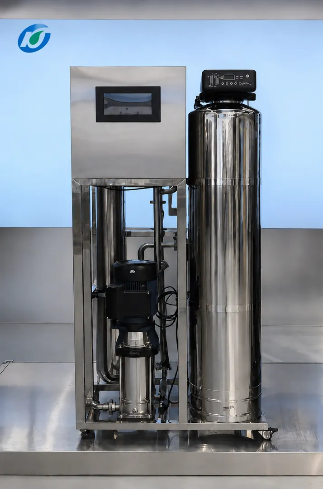

500 LPH Compact RO Drinking Water System
0.5 m³/h multi-stage RO system for tight installation spaces
- 500 L/h
- Purified-water output
- 97–99%
- Typical salt rejection
- PLC
- Automatic control
A compact RO drinking-water system for Philippine water stations, schools, food-and-beverage outlets and small commercial sites — especially projects where installation space is limited.
Request a Quote ↗
What is the WRS-500 and who is it for?
A 0.5-ton-per-hour (500 LPH) RO drinking-water system that fits where larger plants cannot — combining quartz-sand, activated-carbon and precision pretreatment with reverse osmosis to reduce suspended solids, odor, color and dissolved impurities.
At a glance
- ≈ 4,000 liters in an 8-hour day — roughly 200 five-gallon containers
- Groundwater options: aeration, iron-and-manganese removal, softening, antiscalant, post-RO UV
- PLC automatic control keeps daily operation and maintenance simple
Related: Single & Double Stage RO family · Drinking Water System · Philippines market guide
Recommended process
Multi-stage pretreatment protects the membranes; options are added or removed based on your raw-water test.
Raw Water Tank → Feed Pump → Optional Aeration / Iron-Manganese Removal → Quartz Sand Filter → Activated Carbon → Softener or Antiscalant → PP Cartridge Filter → RO → UV (optional) → Clean Water Tank
Key features
- 500 liters of purified water per hour
- Fits installations with limited space
- Multi-stage pretreatment: quartz sand, activated carbon, PP precision filtration
- Groundwater options: aeration, iron-manganese removal, softening, antiscalant, post-RO UV
- PLC automatic control for stable, easy daily operation
Maintenance at a glance
| Item | Typical interval |
|---|---|
| Quartz-sand backwash | Scheduled backwash cycle |
| Activated carbon | 6–12 months |
| PP cartridge filters | 1–3 months |
| RO membranes | 2–3 years |
| UV lamp (if fitted) | Replace yearly |
Important note
A raw-water test is required before system design so the right pretreatment options — aeration, iron-and-manganese removal, softening or antiscalant — are selected for your water.
Tell us about
your water.
Send your raw-water analysis (or ask us how to get one tested), daily volume target and available installation space. KONCHE will confirm the configuration and quotation.